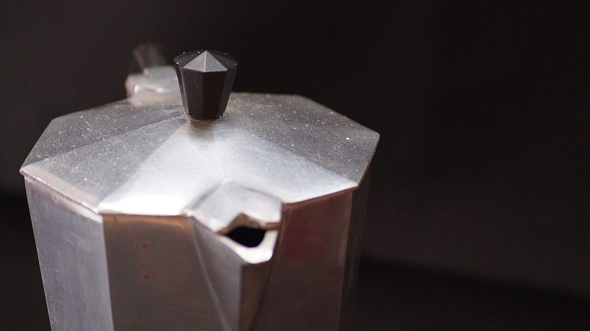

第一枚
CAFE / 静岡県富士市
カフェ ガルボ
静岡県富士市富士町８−８にあるカフェ「カフェ ガルボ」のご案内です。営業時間やメニューは準備中。分かっていることだけを、字幕カードのように短く並べました。

制作側の連想
屋号の響きから、無声映画へ
お店の名前の由来は分かりません。制作側は「ガルボ」という響きから、画面に短い文字だけが現れる古い無声映画を連想しました。そこでこのサイトは、5ページを5枚の字幕カードに見立てています。お店の理念や由来とは無関係の、制作側の連想です。
場面のイメージ
豆・金属・ことば少なめの一コマ
写真は物のクローズアップのフリー素材で、お店のものではありません。
